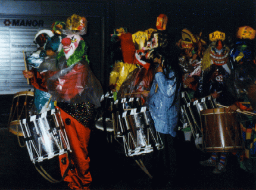
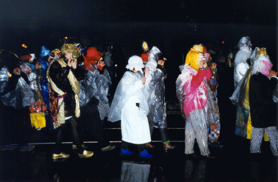
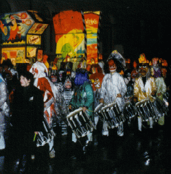
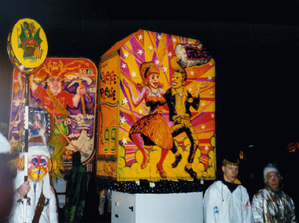
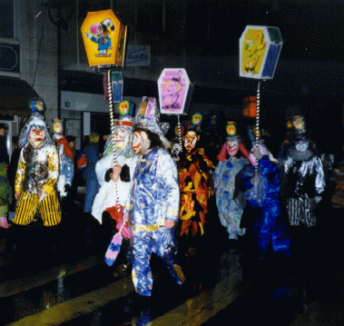

| A Basilea, la cartina non serve. Per
lo meno non serve alle 3:30 di questa piovosa notte di febbraio. E' sufficiente
seguire la folla, fuori della stazione e poi via via verso la citta' vecchia.
Il pigia pigia si fa sempre piu' fitto mentre sfiliamo a fianco della fontana,
poi davanti al municipio dalla facciata rossa e dalle torri coi tetti a
spiovente che grondano acqua e nebbia. Ben presto diventa impossibile proseguire,
e non ci resta altro da fare che tirare il cappello sulle orecchie e rigirare
la sciarpa alla ricerca di un angolino che non sia fradicio.
Il buio. Di colpo, tutte le luci si spengono. Istintivamente, guardo l'orologio: le quattro in punto. "Evidemment", commenta il mio compagno. Rullano i tamburi. Sbucando d'in mezzo alla folla un gruppo di esseri pelosi e arruffati, gli sguardi attoniti e le bocche enormi, ghignanti, appare alla luce incerta e beffarda di una lanterna dipinta. Poi due, dieci, venti luci si accendono intorno alla prima, spandendo riflessi multicolori su una zazzera, un becco, un grugno. |
 |
|  | I flauti incominciano a suonare, e
il corteo surrealista prende ad avanzare verso di noi. Abbiamo appena il
tempo di farci da parte, e subito un altro rullo di tamburi alle nostre
spalle ci fa sobbalzare.
Cerchiamo rifugio ai margini della strada. I flauti cadenzati dai tamburi riempiono la notte del ritmo di una fanfara che vibra e si espande, ripresa e trascinata e lasciata cadere dalle clique che si incrociano, lanterne contro lanterne, tamburi contro tamburi, gli sguardi assenti delle maschere emergenti a tratti nella ieratica fissita' di un istante.
|
| Poi
la magia ci prende e ci troviamo a seguire una lanterna, mentre da ogni
parte gruppi di luci variopinte e frastornanti assumono un volto ammiccante
prima di tornare a perdersi, col loro gruppetto di accoliti, nel dedalo
delle vie.
|
 |
|  | Il Carnevale ci trascina cosi' come
il pifferaio di Hamelin, fino a quando il rigore del mattino non ha il
sopravvento e ci lasciamo sedurre dal tepore di un bistrot. Quando ne usciamo,
in bocca il sapore della Mehlsuppe, sono ormai le sette. Il mattino strappa
la bruma dal letto del Reno e la spande sulla citta', che ancora risuona
della stessa, molteplice danza, un poco stanca, forse, adesso. Ma la malinconia
ha poca presa, e di nuovo stiamo marciando dietro i tamburi, ridendo, adesso,
perche' di giorno il re e' nudo, le carrozze ritornano zucche e il camion
del latte si lascia dietro, ahime', una scia di gasolio...
|